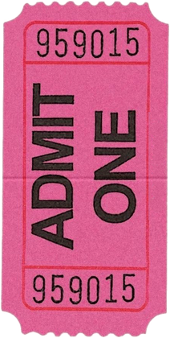
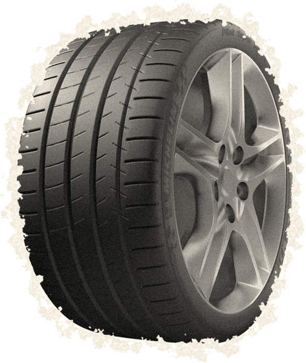
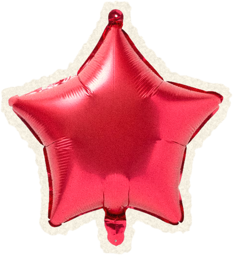

An ever-growing astrology archive
What this is
This is an exploratory astrology site. All learnings and theories explored here are open to interpretation. We see astrology as a tool for self-discovery and inquiry.
Loading today's sky…
Sun, Moon, and planet signs only need today's date — Rising needs your location too, and only your browser sees it.
The Archive
The first essays are still being written — Venus signs, birth charts, transits, and more. Check back soon.